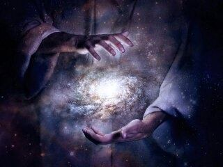
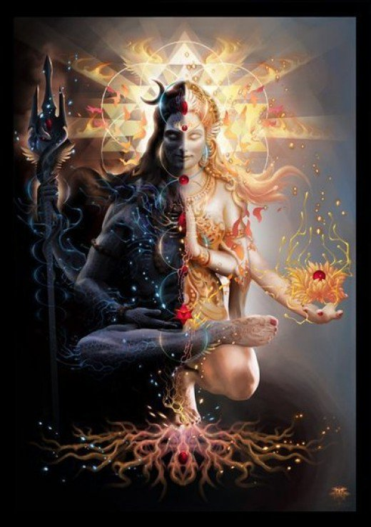

The origin of universe has always been a source of amusement for people. According to Hindu Mythology, there are two strong theories of origin of Universe.
Cosmic Eggshell theory
According to ancient texts, the present universe was born from an egg (popularly known as cosmic egg). This egg was believed to be floating inside an imaginary womb Hiranyagarbha (garbha = womb). What was inside the womb is the reason we all exist today. We called that singular life form “Brahma”. However, along with Brahma, two other forms of energy also emerged. We better know these forms of energy as Shiv and Vish(nu).
Brahma
It is said that Brahma created life. He was the first being to be created (How? There’s no concrete evidence or text). He felt the need of something just like him, primitive and simple beings. So he trained himself though meditation, explored the secrets of his bodily creation, mastered it. After a long time, he was able to make, what we call “life” now, in the form of Beings.

Brahma creating the Universesource:GoogleImages
Shiv and Vish(nu)
Meanwhile there existed two forms of energy- Shiv and Vishnu.
Everything needs a counterpart. By counterpart I mean to say there is always something which is incomplete without some other thing. However, these two things can never come together.
Same is the case with Shiv and Vishnu. Soon after their existence both evolved themselves (just like Brahma through self-learning). One became the annihilator(Shiv) while the other became the preserver(Vishnu). Shiv and Vishnu are the opposite sides of the same coin. Either of them is incomplete without the other one.
When the cosmic eggshell cracked there is a possibility that other forms of energy came into existence, but due to lack of self-learning, they are in so small amount that their presence can never be felt. At this point Brahma, Vishnu and Shiv, became the primordial creatures of this version of Cosmic eggshell (explained later).
Adi Parashakti theory
This theory is a bit different than the previous one. It says that the universe originated from a singular point of pure energy. This point was the source of eternal pure energy in whole universe. Adi Shakti was dynamic form and in contrast with the static masculine form of energy.
According to Shrimad Bhagwat Gita, Adi Shakti created Lord Vishnu and made him the preserver of the universe. Later on Vishnu created Brahma and they both will be collectively responsible for the sustenance of the world. She also created Rudra for the annihilation and the regeneration of the universe.

Adi-shakti and Lord Shivsource:GoogleImages
Since everything needs a counterpart, Adishakti became the feminine counterpart of Shiva as Goddess Parvati, Vishnu as Goddess Lakshmi and Brahma as Goddess Saraswati.
Adi Shakti, Vishnu, Rudra(Shiv) and Brahma were not mere names, they were the purest forms of energy. Through meditation and self-learning they went on to become godly creatures. We humans know not much about energy, it is possible the creation of the universe through these forms of energy are yet to be understood and interpreted by modern day Scientists. But one thing is clear, the creation of universe as depicted by our Vedas and Scriptures can give us some hint as to how the universe was created.